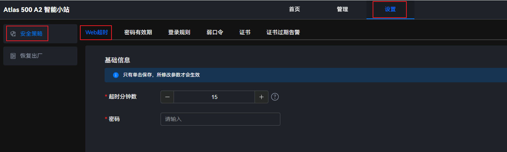

设置Web超时时长
- 在主菜单中选择。图1 Web超时
 - 设置超时分钟数。
可以通过单击列表框手动输入超时分钟数。
可以单击
 ，设置超时分钟数。设置的起始超时分钟数为5分钟，单击
，设置超时分钟数。设置的起始超时分钟数为5分钟，单击 后，每单击一次增加一分钟；每单击
后，每单击一次增加一分钟；每单击 一次减少一分钟。图2 Web超时设置
一次减少一分钟。图2 Web超时设置

超时分钟数取值范围为5~120分钟，默认值是15分钟。
- 在“密码”文本框中输入系统当前的用户密码。
- 单击“保存”。
界面弹出“保存成功”提示框，此时表示Web超时时间设置成功。
可以通过单击列表框手动输入超时分钟数。
可以单击，设置超时分钟数。设置的起始超时分钟数为5分钟，单击后，每单击一次增加一分钟；每单击一次减少一分钟。
超时分钟数取值范围为5~120分钟，默认值是15分钟。
界面弹出“保存成功”提示框，此时表示Web超时时间设置成功。